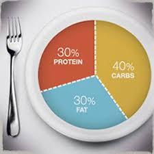

Nutrition cannot be forgotten about if you're going to be dedicating time in the gym. In fact, I would argue that nutrition plays a larger role than working out does when it comes to changes in your physique. It is important that one eats according to personal goals. If you want to lose weight, eat in a caloric deficit. If you want to gain muscle, eat more but be cautious. Here is a chart that I would recommend to keep in mind when eating.

Training and eating healthy are difficult at first, so it is important that you start off slow then become more disciplined. For example, if you eat McDonalds five times a week try to go there only four times a week. If you're confident enough then the week after that only go three times. The point is that this is not a race, but a marathon.
Protein is undoubtedly the first macromolecule thought of when one thinks of bodybuilding. Protien is essential to building muscle as it is made up of amino acids(the building blocks of muscle).
People are often scared when it comes to the thought of carbohydrates. However, carbs are your friend! The body takes carbs and fuels your muscles for energy production. This is why the chart recommends that at least 40% of your diet is made up of carbs. Carbohydrates provide fuel for your workouts!
Fats are important to your diet; do not let the term fool you into ignoring fats. Our bodies need fat to function properly. Without fats, our body would not be able to build cells and regulate most of our bodily processes. Fats conribute to our health because they provide essential fatty acids that our body cannot produce itself.